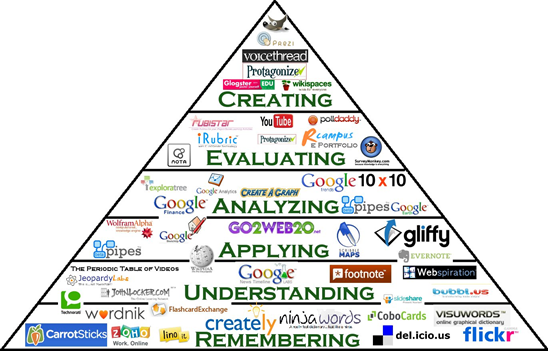
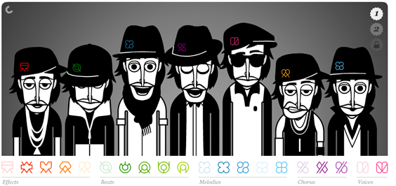

One of the best ways to transfer knowledge through your Learning System is to make it interactive! All too often, Learning Systems present users with intellectual challenges in a very dry and boring way. As many students will likely tell you, boredom is a great detriment to the learning process. This is because humans are equipped with complex processing systems and when these systems are not occupied with sensory information the brain creates imaginary signals for them to detect. A great example of this phenomenon is daydreaming!
With that being said, successful Learning Systems are ones that employ an interactive strategy that gives the user shared control over their experience. Users should feel that they are the “locus of control” even if in reality, they are not. Online gambling sites make great use of this strategy, making their users feel like they are in control, when in reality they are more likely throwing their money away.
representing the lowest-to-highest levels of learning according to “Bloom’s Taxonomy of Educational Objectives”. Thus, the most ambitious of Learning Systems should implement an interactive strategy that allows their users to create content according to their newly acquired knowledge, while the least ambitious interactive Learning Systems simply require users to memorize content (i.e. McGraw-Hill’s Connect).
When deciding how to design your interactive Learning System, you should aim to utilize a strategy that will force users to learn at one of the higher levels (analyzing, evaluating, creating). In addition to this, your interactive strategy should occupy as many sensory channels as possible (sight, sound, touch) without overwhelming your users. An example of a site that does this is Incredibox.com. In a short overview, you drag the elements in the bottom to a person, and that person would make a sound. Joining in more sounds makes a beat, thus teaching the basics of music to children and anyone else alike.
